Die Warnkleidung muss ein Etikett u. a. mit CE-Kennzeichnung aufweisen (Abbildungen 2 und 3). Grundsätzlich müssen persönliche Schutzausrüstungen:
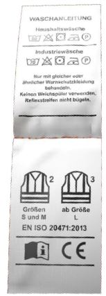
Abb. 2 Ausschnitt eines Etikettes eines T-Shirts, welches in den Größen S, M der Warnkleidungsklasse 2 und ab L der Warnkleidungsklasse 3 entspricht
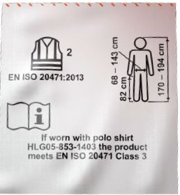
Abb. 3 Ausschnitt eines Etikettes einer Hose Warnkleidungsklasse 2, die ggf. mit einem T-Shirt getragenwerden kann und dann Warnkleidungsklasse 3 ergibt.
Die Norm DIN EN ISO 20471 "Hochsichtbare Warnkleidung – Prüfverfahren und Anforderungen" vom September 2013, inzwischen mit Stand DIN EN ISO 20471:2017, hat die DIN EN 471 "Warnkleidung" ersetzt und legt die Anforderungen an Schutzkleidung fest, die die Anwesenheit des Trägers oder der Trägerin visuell signalisieren soll. Warnkleidung soll den Träger oder die Trägerin bei unterschiedlichen Lichtverhältnissen am Tage sowie beim Anstrahlen durch Fahrzeugscheinwerfer in der Dunkelheit unabhängig von Körperhaltungen und Positionen als Person auffällig machen. Um zu gewährleisten, dass die Warnkleidung auffällig erkennbar ist, sind Leistungsanforderungen an das farbige, fluoreszierende Hintergrundmaterial, das retroreflektierende Material sowie an die Mindestflächen und die Anordnung dieser Materialien festgelegt (DIN EN ISO 20471:2017).
Nach der DIN EN ISO 20471 sind sowohl die fluoreszierenden als auch die retroreflektierenden Materialien so auf dem Kleidungsstück verteilt, dass eine Rundumsichtbarkeit der Person in möglichst allen Körperhaltungen und Positionen erreicht wird.
Bei der Arbeit im Freien und auf Baustellen treten Klimabedingungen (Nässe, Wind und Umgebungskälte) auf, die den Wärmehaushalt des Körpers nachhaltig beeinflussen können. Häufig ist Warnkleidung daher gleichzeitig auch Schutzkleidung gegen klimatische Witterungseinflüsse.
Warnkleidung wird je nach Mindestfläche an fluoreszierendem sowie retroreflektierendem Material in drei Klassen eingeteilt, wobei Klasse 3 die beste Sichtbarkeit bietet.
Die fluoreszierenden Materialien werden für die Tagesauffälligkeit eingesetzt, die retroreflektierenden Materialien dienen der Nachtauffälligkeit.
Die Flächen werden an der kleinsten verfügbaren Kleidergröße, in der dieses Kleidungsstück am Markt bereitgestellt wird, gemessen. Bei der Kombination von Warnkleidungsstücken kann durch Addition der entsprechenden Kleidungsklassen nicht automatisch eine höhere Klasse erreicht werden, da sowohl die sichtbaren Mindestflächen des Hintergrundmaterials als auch des retroreflektierenden Materials der gesamten Kombination ausschlaggebend sind.
Warnkleidung der Klasse 3 muss den Torso umschließen und gleichzeitig mindestens lange Ärmel, lange Hosenbeine mit retroreflektierenden Streifen oder beides haben.
Ein Beispiel: Eine Jacke mit abtrennbaren Ärmeln entspricht laut Zertifikat Warnkleidungsklasse 3. Werden aus dieser Jacke die Ärmel abgetrennt, entspricht diese Jacke dann einer Weste. Laut Zertifikat entspricht die Weste allein der Warnkleidungsklasse 2. Das Abtrennen der Ärmel führt dazu, dass die Person nur noch Warnkleidungsklasse 2 trägt. Wurde in der Gefährdungsbeurteilung ermittelt, dass Warnkleidungsklasse 3 zu tragen ist, dann ist diese Person nicht mehr ausreichend geschützt.
Wenn mehrere Warnkleidungsstücke gemeinsam zertifiziert sind und bei der Anwendung die angegebene Warnkleidungsklasse erforderlich ist, dann dürfen sie nur wie vom Hersteller vorgegeben gemeinsam getragen werden.
Abbildung 3 zeigt ein Etikett zu einer Latzhose gehört, die allein Warnkleidungsklasse 2 entspricht.
Wird diese Hose zusammen mit dem angegebenen T-Shirt getragen, dann entspricht die Kombination der Warnkleidungsklasse 3.
Tabelle 1: Mindestflächen des sichtbaren Materials in m²
(entspr. Tab. 1 der DIN EN ISO 20471)
| Kleidung Klasse 3 [m2] |
Kleidung Klasse 2 [m2] |
Kleidung Klasse 1 [m2] |
|
| Fluoreszierendes Hintergrundmaterial | 0,80 | 0,50 | 0,14 |
| Retroreflektierendes Material | 0,20 | 0,13 | 0,10 |
| Material mit kombinierten Eigenschaften | – | – | 0,20 |
Bei unterschiedlichen Sichtverhältnissen wird der beste Kontrast von Warnkleidung zur Umgebung durch fluoreszierende Farben erreicht. Fluoreszierende Farben sind keine natürlichen Farben und daher in der Umgebung nicht vertreten, so dass sie auffallen. Hierzu gehören fluoreszierendes Gelb, fluoreszierendes Orange-Rot und fluoreszierendes Rot. Deshalb sieht die DIN EN ISO 20471 diese drei Farben für das Hintergrundmaterial der Warnkleidung vor.
Gemäß Verwaltungsvorschrift zu § 35 Abs. 6 Straßenverkehrsordnung (StVO) sind aber nur die Farben fluoreszierendes Gelb und fluoreszierendes Orange-Rot zulässig.
Sind nach den Vorschriften mehrere Hintergrundfarben zulässig, so ist im Rahmen der Gefährdungsbeurteilung, in der auch die Umgebungsbedingungen zu bedenken sind, zu prüfen, welche der zulässigen Hintergrundfarben eine bessere Erkennbarkeit ermöglicht.
Eine Person mit einer Warnweste in fluoreszierendem Gelb ist in bewaldeten Umgebungen oder z. B. vor einem Rapsfeld weniger gut erkennbar, als eine Person mit Warnweste in fluoreszierendem Orange-Rot (Abbildung 4a–b).
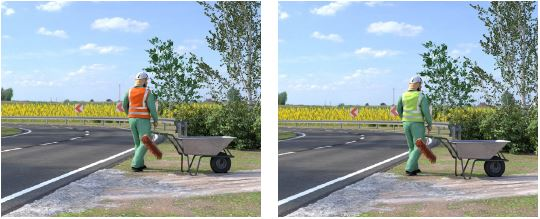
Abb. 4 a–b Erkennbarkeit einer Person mit Warnweste in fluoreszierendem Orange-Rot oder fluoreszierendem Gelb
Ebenso gehören die Arbeitsgeräte zur Umgebung, so dass eine orangene Warnkleidung sicher besser zu sehen wäre, als das fluoreszierende Gelb vor der grünen Maschine, wie in Abbildung 5 zu sehen.
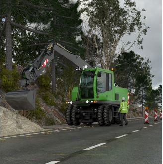
Abb. 5 Erkennbarkeit einer Person mit Warnkleidung vor Arbeitsgerät
In jedem Fall ist Warnkleidung für die Erkennbarkeit von Personen wichtig, um zu verhindern, dass Personen mit der Umgebung optisch verschmelzen (Abbildung 6).
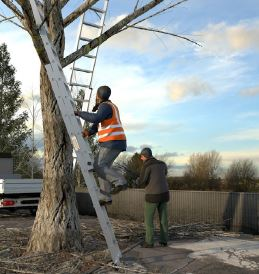 |
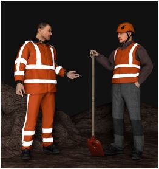 |
Abb. 6 Erkennbarkeit einer Person mit Warnweste |
Abb. 7 Nachtauffälligkeit durch Reflexstreifen |
In der Dunkelheit und bei schlechten Sichtverhältnissen werfen die retroreflektierenden Streifen auf der Warnkleidung das Licht von Scheinwerfern zurück und sorgen dafür, dass Personen, die sich im Verkehrsbereich aufhalten, von anderen Verkehrsteilnehmenden rechtzeitig gesehen werden können.
Nach DIN EN ISO 20471 müssen retroreflektierende Streifen aus Reflexmaterial (Tabelle 4 aus DIN EN ISO 20471 Eigenschaften für retroreflektierendes Material) für Kleidung Klasse 2 und 3 angebracht sein. Da nur Reflexmaterial auf Warnkleidung verarbeitet werden darf, welches diesen Anforderungen genügt, gibt es zukünftig nur noch diese Qualität, welche nicht extra gekennzeichnet wird (siehe Piktogramm und Herstellerkennzeichnung). Auf die frühere untere zweite Zahl im Piktogramm wird daher verzichtet.
Die Reflexstreifen müssen mind. 50 mm breit sein und bei zwei horizontalen Reflexstreifen müssen diese mind. 50 mm voneinander entfernt sein.
Für Arbeiten in Dunkelheit ist Warnkleidung Klasse 3 zu verwenden, wobei die zusätzlich verfügbare Fläche an Reflexstreifen die menschliche Gestalt (Kontur) betonen soll.
So verbessert die Kombination von waagerechten und senkrechten Reflexstreifen auf Westen und Jacken die Erkennbarkeit. Sind die waagerechten Reflexstreifen beispielsweise bei gebückter Haltung verdeckt, wäre die Person ohne zusätzliche vertikal angeordnete Reflexstreifen (sogenannte Schulterstreifen) bei Dunkelheit nicht mehr sichtbar.
Neben der horizontalen Anordnung können die Reflexstreifen auch mit einer Neigung von maximal ± 20° zur Waagerechten aufgebracht sein.
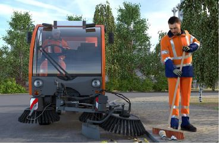
Abb. 8a Tagsichtbarkeit
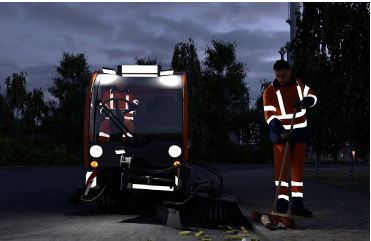
Abb. 8b Nachtauffälligkeit
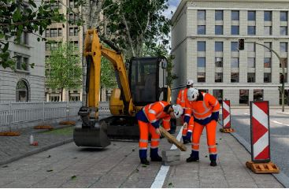
Abb. 8c wechselnde Lichtverhältnisse
Wenn die Warnkleidung nach DIN EN ISO 20471 gefertigt wurde, sind die Leistungsanforderungen an das fluoreszierende Hintergrundmaterial, das retroreflektierende Material sowie an die Mindestflächen und die Anordnungen dieser Materialien erfüllt. Dies ist am Etikett erkennbar. Das bedeutet, dass Warnkleidung, die auf dem Markt bereitgestellt wird, den Anforderungen der DIN EN ISO 20471 entspricht und der Einkäufer dies nicht zusätzlich durch ein Prüfinstitut überprüfen muss.
Die DIN EN 471 wurde im September 2013 durch die neue Norm DIN EN ISO 20471 ersetzt. Die Hersteller dürfen Warnkleidung nach der alten Norm DIN EN 471 noch herstellen und am Markt bereitstellen, solange das Zertifikat gültig ist.
Im Betrieb vorhandene Warnkleidung nach DIN EN 471, deren Ablegereife noch nicht erreicht ist, darf weiterverwendet werden.
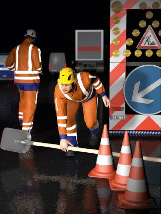
Abb. 9 gebückte Arbeitshaltung und dabei sichtbare Schulterstreifen
Wenn in dieser DGUV Information Warnkleidung nach DIN EN ISO 20471 gefordert wird, kann auch Warnkleidung nach DIN EN 471 verwendet werden, solange diese nicht ablegereif ist.
Nachträgliche Veränderungen (z. B. das Abschneiden oder Kürzen von Ärmeln/Hosenbeinen) sind unzulässig. Sie können zum Erlöschen der Baumusterprüfung führen, da durch Verkleinerung der Hintergrundflächen oder der Reflexstreifen die zertifizierten Warnkleidungsklassen ggf. nicht mehr gewährleistet sind.
Daher dürfen Veränderungen nur nach Rücksprache mit dem Hersteller und innerhalb des Geltungsbereiches des Zertifikates vorgenommen werden. Das gilt auch für das Anbringen von Firmenlogos oder Applikationen.
Bei der Arbeit im Freien und auf Baustellen treten Klimabedingungen auf, die den Wärmehaushalt des Körpers beeinflussen können. Häufig muss Warnkleidung auch gegen Nässe und Wind sowie Kälte schützen. Fehlzeiten oder Leistungsminderung durch Erkältungen, Muskelverspannungen oder Rückenschmerzen können typische Folgen sein, die ggf. auch negative Auswirkungen auf das wirtschaftliche Ergebnis des Unternehmens haben können.
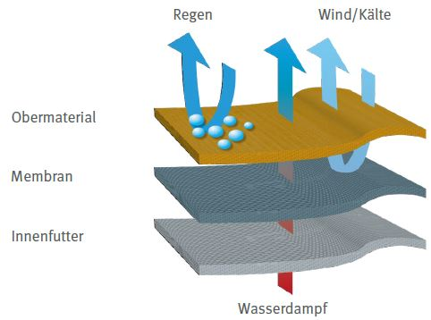
Abb. 10 Wasserdampfaustausch
Die Warnkleidung mit Funktion als Schutzkleidung gegen Regen darf die Temperaturregelungsvorgänge des menschlichen Körpers bei körperlicher Arbeit nicht wesentlich behindern, d. h. der vom Körper produzierte Wasserdampf (Schweiß) muss nach außen abgegeben werden können.
Da diese Bekleidung eine Kombination aus Schutzkleidung gegen Regen und Warnkleidung darstellt, wird sie sowohl entsprechend der Norm DIN EN ISO 20471 als auch der DIN EN 343 "Schutzkleidung – Schutz gegen Regen" gefertigt.
In der DIN EN 343 sind die Anforderungen an die Bekleidung hinsichtlich des Schutzes gegen Regen und des Tragekomforts definiert und danach wird die Bekleidung in die Klassen 1, 2 oder 3 eingeteilt. Diese Klasseneinteilung darf bei Auswahl und Beschaffung nicht mit den Klassen der Warnkleidung verwechselt werden.
Je höher die Klasse ist, desto besser der Schutz vor eindringender Feuchtigkeit bzw. desto besser der Feuchtigkeitstransport durch die Kleidung nach außen und somit der Tragekomfort.
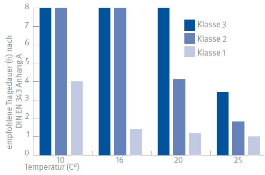
Abb. 11 Klassen nach DIN EN 343 von Schutzkleidung gegen Regen und empfohlene Tragedauern bei entsprechenden Außentemperaturen
Wegen der hohen thermischen Belastungen, die bei mangelndem Wasserdampfdurchgang entstehen, sind für die drei Klassen an Schutzkleidung gegen Regen unterschiedliche maximale Tragedauern festgelegt.
Bekleidung zum Schutz gegen Regen, die nur der DIN EN 343 Klasse 1 genügt, muss aufgrund der physiologischen Trageeigenschaften mit einem Warnhinweis versehen sein, der auf die begrenzte Tragezeit hinweist. Der Tragekomfort von Wetterschutzkleidung ist bei DIN EN 343 Klasse 3 am höchsten und für Beschäftigte empfehlenswert, die die Wetterschutzkleidung ständig tragen müssen. Mindestens empfiehlt sich aber die Anschaffung von Wetterschutzkleidung der DIN EN 343 Klasse 2. Welche Klasse hinsichtlich der Warnfunktion außerdem notwendig ist, wird auf Grundlage der Gefährdungsbeurteilung ausgewählt.
Schwer entflammbare Kleidung muss grundsätzliche Forderungen erfüllen:
Für PSA, die sich aus mehreren Teilen zusammensetzt, gilt, dass alle Teile dieselbe Leistungsklasse haben müssen, z. B. Schürze und Schürzenband. Ist dies nicht der Fall, gibt das Anbauteil mit der niedrigsten Leistungsklasse die Leistungsklasse für die gesamte PSA vor.
Generell müssen alle Teile der schwer entflammbaren Warnkleidung über den gesamten Lebenszyklus schwer entflammbar bleiben, dies gilt für regelgerecht angebrachte Aufdrucke, die Reflexstreifen und das Hintergrundmaterial.
Wenn Warnkleidung nach Gefährdungsbeurteilung schwer entflammbar sein muss, sind diese Anforderungen zu erfüllen. Häufig ist das jedoch nicht möglich, weil das Hintergrundmaterial von Warnkleidung meist eine Chemiefaser als Farbträger enthält. Es ist zu entscheiden, wie die Sicherheit gewährleistet werden kann und ob bereits alle technischen oder organisatorischen Schutzmaßnahmen ausgeschöpft sind.
Tabelle 2: Auszug aus der DIN EN ISO 11612, Anforderungskatalog nach DIN EN ISO 11612
| Codebuchstabe | Leistungsstufe | |
| begrenzte Flammenausbreitung | A1 und/oder A2 | ohne |
| konvektive Hitze | B | 1 |
| Strahlungshitze | C | 1 bis 4 |
| flüssige Aluminiumspritzer | D | 1 bis 3 |
| flüssige Eisenspritzer | E | 1 bis 3 |
| Kontaktwärme | F | 1 bis 3 |
Leistungsstufen: je höher desto besser
Codebuchstaben A1 und A2 werden nach unterschiedlichen Verfahren ermittelt: Codebuchstabe A1 nach Oberflächenbeflammung, Codebuchstabe A2 nach Kantenbeflammung. Das Verfahren richtet sich nach dem Einsatzzweck der Kleidung.
Bei Schnittschutzhosen wird ein Bereich festgelegt, der die geforderte Schutzbedeckung an der Schutzkleidung ist und als Form A, Form B oder Form C bezeichnet. Nähte dürfen in dem Schutzbereich nicht verlegt sein. Bei der Form A, die für den professionellen Bereich vorgesehen ist, muss das Schutzmaterial dauerhaft mit der Kleidung längs zum Bein an der Außenkannte der Schnittschutzeinlage verbunden sein. Form C ist eher für den gelegentlichen Einsatz vorgesehen.
Schnittschutzkleidung wird in Abhängigkeit der Prüfgeschwindigkeit der Sägekette im Labor, in folgende Leistungsklasse eingeteilt: Schutzklasse 1: 20 m/s, Schutzklasse 2: 24 m/s, Schutzklasse 3: 28 m/s.
Die Kennzeichnung der Schnittschutzkleidung muss mindestens das Piktogramm "Kettensäge", die Angabe der Form, die Angabe der Schutzklasse, 1, 2 oder 3, und den Satz "Bei Beschädigung muss das Kleidungsstück ausgesondert werden" umfassen.
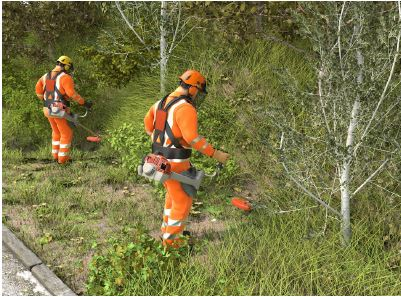
Abb. 12 Kombinationen von PSA, Schnittschutz- und Warnkleidung, Kopf-, Gehör- und Gesichtsschutz